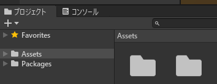
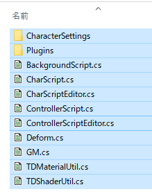

com.square_enix.android_googleplay.PTDの3Dモデルを読み込みUnity Editorに表示します。
必要なもの：
/sdcard/Android/data/com.square_enix.android_googleplay.PTD/files/prim)Unityで新規プロジェクト 3D(コア)を作成。
src以下のファイルを全て選択して、プロジェクトのAssetsにDrag&Drop。
 
UnityChanToonShaderを使う場合は、別途DLしたUTS2_ShaderOnly_v2.0.8_Release.unitypackageもD&D。
「編集」→「プロジェクト設定」→「Player」→「PC,Mac & Linux Standalone の設定」
「その他の設定 」
「自動グラフィックス API for Windows」をアンチェック。
「Graphics APIs for Windows」の1番上に 「OpenGLES2」を設定する。
Unity Editorを再起動。
家の環境ではOpenGLES2に設定したら暗くなった。
その他の設定→色空間をガンマに設定。
オリジナルのシェーダーを使った場合、シーンビューがIsoでは正常に表示されません。 Perspを選んでください。
左のヒエラルキーのSampleSceneで右クリックして、「Create Empty」で空のゲームオブジェクトを作ります。
作ったゲームオブジェクト名を右クリックして「rename」を選び名前をSakuraにします(サクラ用)。
Sakuraを選択した状態で、右側のインスペクターの Add Component(コンポーネントを追加)を押します。
Script -> Char Script を選び、CharScriptコンポーネントを追加します。 シェーダーを変えたい場合はシェーダーを変更しておきます。
▷再生ボタンを押します。
Assets/prim_dir.txtが無ければ、ファイルダイアログが開きます。ゲームデータのあるディレクトリを指定してください。
インスペクターのLoad Animボタンを押し、Playボタンを押すとアニメーションが再生されます。
各ID(ファイル名)を変更してLoad *ボタンを押すと指定したファイルを読み込みます。
ControllerScriptをアタッチして、インスペクターのPlay Allボタンを押すと、すべてのゲームオブジェクトを再生できます。
※Unityで再生中に変更した設定は基本的に破棄されます。
プロジェクトのAssetsにprim_dir.txtがあれば、そこで指定したパスから読み込みます。
設定例：D:\game\dolls\gamedata\files\prim
Assets/CharacterSettings
にあるゲームオブジェクト名.jsonで読み込むモデルのファイルを設定します。
同名のゲームオブジェクト(例： Aya)を作成して、コンポーネントを追加してください( Script -> CharScript)
Aya.json
{
"anim":"b_wait01-loop_c007",
"body":"b0028c000",
"face":"f002m000",
"hair":"h007m000_prefab",
"faceTexture":"v01_f002m000c007_a",
"accy0":"i7003_A",
"accy1":"i7003_B"
}
accyS: 3Dモデル(アクセサリー)のファイル名。※キーが重複しなければ複数可。Sは任意の文字列(例: 1)
※ファイル名の拡張子(.abap)はあっても動きます。
Assets/CharacterSettings/accessory_dic.json にボーンとの対応を記入する必要がありますh(キャラクターID)m(数字)_prefab.abap
f(数字)m(数字).abap
b(数字)c(キャラクターID).abap
専用モデル以外のキャラクターIDは 000。
b_(*).abap
b_photo-common-mot(数字).abap
b_photo-common-pose(数字).abap
b_skill-ur(*)-(*).abap